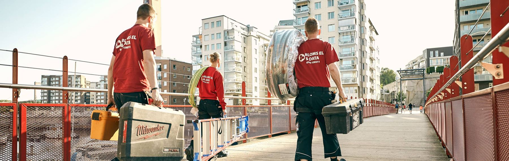
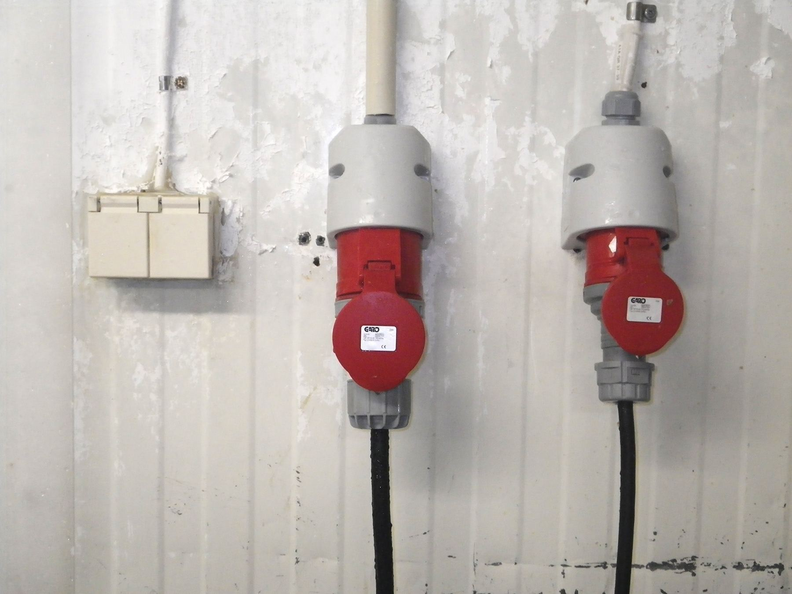
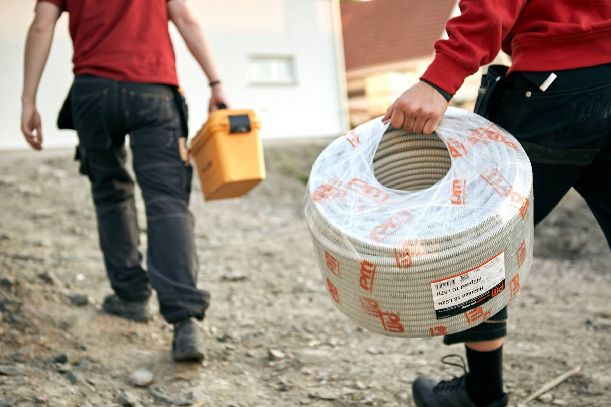
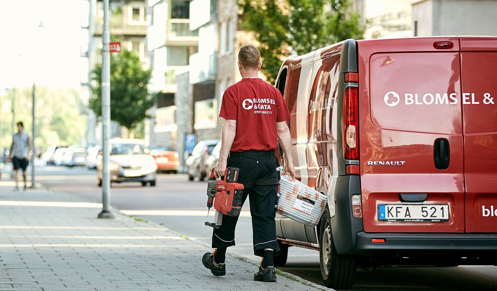
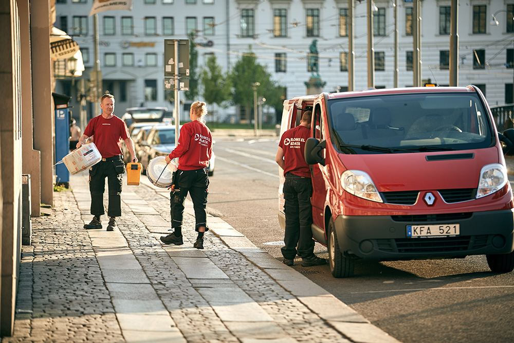
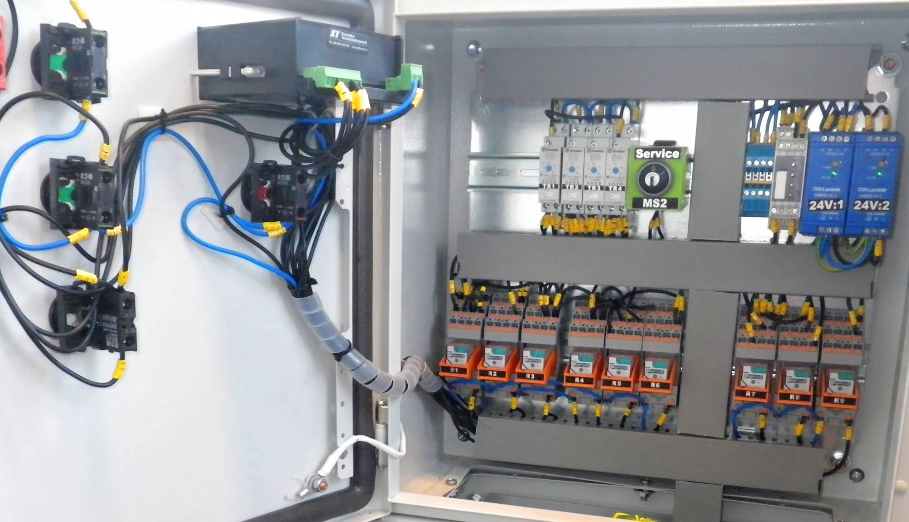
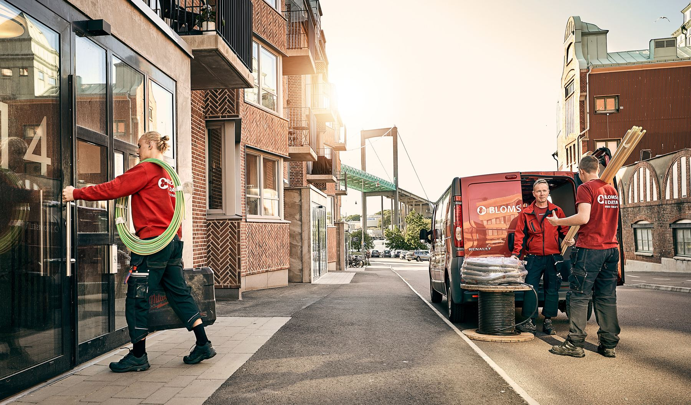
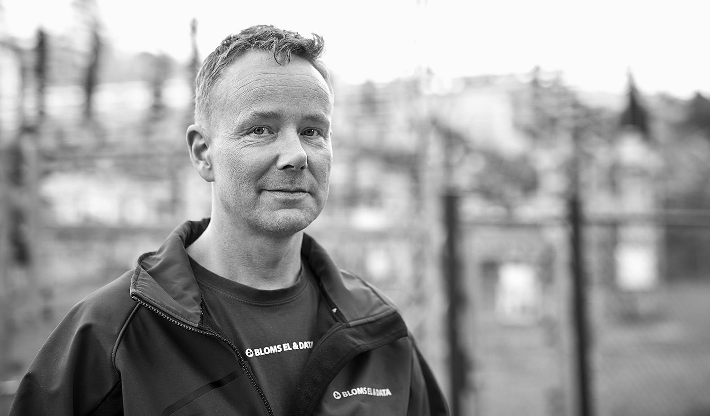
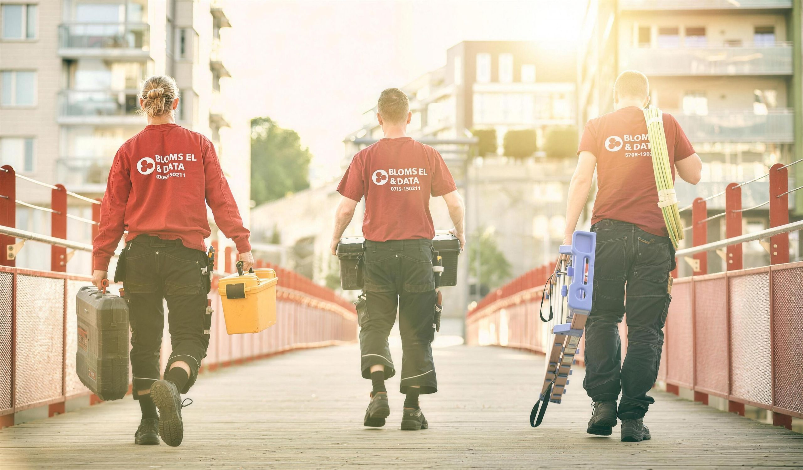

Elektriker i Kungälv för företag, fastigheter och bostäder
Behöver ni en elektriker i Kungälv för service, ombyggnation eller en ny installation? Bloms El & Data hjälper företag, fastighetsägare, bostadsrättsföreningar och privatpersoner med elarbeten i Kungälv och övriga Göteborgsregionen.



Elektriker i Kungälv sedan 2008
Vi har arbetat med elinstallationer sedan 2008 och kan ta hand om hela arbetet från planering och ritning till installation, felsökning, dokumentation och kontroll.
Elfirma nära Kungälv





Elektriker Kungälv för privat och företag
Ett elfel behöver inte innebära ett totalt strömavbrott för att skapa problem. Återkommande säkringsproblem, fel i belysningen, bristande dokumentation eller en elanläggning som inte längre är anpassad efter verksamhetens belastning kan skapa störningar och försvåra framtida förändringar.
Vi hjälper till med elservice och elinstallationer i både befintliga och nya anläggningar. Det kan handla om felsökning, komplettering av uttag och kraftmatning, ombyggnad av elanläggningen, belysning eller installation i samband med att en lokal får en ny användning.
Tjänster vi kan erbjuda inom el i Kungälv



Certifierade elinstallationer för fastigheter och olika verksamheter
Bloms El arbetar med el och data i flera typer av miljöer:
- Industri och verkstad: kraft, elinstallationer, styrsystem, felsökning och anpassningar i befintliga anläggningar.
- Fastigheter och BRF: service, belysning, gemensamma utrymmen, dokumentation och modernisering.
- Butik och restaurang: kraft, belysning, uttag, data och installationer vid ombyggnad.
- Kontor: belysning, datanät, eluttag och tekniska installationer.
- Nybyggnation och renovering: planering, installation och dokumentation av elanläggningen.
- Laddning: installation av laddboxar och laddlösningar för fastigheter, verksamheter och privatbostäder.
Behöver flera delar samordnas kan vi arbeta med elinstallationen som en sammanhängande helhet istället för att hantera varje åtgärd separat.

på fakturan
Elfirma i Kungälv med lokal närvaro
Bloms El & Data utgår från Göteborg och arbetar i hela regionen. Vi har också tillgång till materialdepå i Kungälv. Det underlättar vid både planerade installationer och servicearbeten där material behöver kompletteras under arbetets gång.
Vi är registrerade hos Elsäkerhetsverket för lågspänningsarbeten inom bland annat bostäder, allmänna och offentliga utrymmen, industri och elproduktionsanläggningar. Vi är ansvarsförsäkrade och lämnar garanti på utförda arbeten.
För den som beställer elarbete handlar tryggheten även om vad som finns kvar efter avslutat arbete. Därför lägger vi stor vikt vid kontroll och dokumentation.
ROT-avdrag för privatpersoner
Elarbeten i privatbostad berättigar normalt till ROT-avdrag som ger skattereduktion på arbetskostnaden. Vi hanterar administrationen mot Skatteverket och drar av beloppet direkt på fakturan. Kontakta oss för att bekräfta att just ditt arbete kvalificerar.
Vi vill helt enkelt vara en elektriker i Kungälv du skall känna förtroende för och anlita igen.
Vi gör alltid vårt yttersta för att skapa goda och långvariga kundrelationer. Nöjda kunder är inte bara en hederssak utan en förutsättning för ett livskraftigt och långsiktigt företagande.
Vi strävar alltid efter att hitta bästa pris och kvalité i varje uppdrag.
Vi erbjuder snabb och professionell kompetens inom vårt verksamhetsområde. Vi gör det genom att alltid vara uppdaterade med den senaste kunskapen inom modern och smart elteknik. Och svårare än så är det inte.

Den bästa försäkringen mot elolyckor är att anlita en riktig elektriker.
Alla våra montörer har ABL- eller BB1-behörighet. Arbetena omfattas av garanti, vi är ansvarsförsäkrade och använder bara CE-märkt material.

Från planering till dokumenterad installation
Ett bra installationsunderlag förenklar både själva arbetet och framtida service. Därför arbetar vi med mer än själva montaget.
Vi kan hjälpa till med planering, elritningar, mätprotokoll och elsäkerhetsintyg. Dokumentationen gör det enklare att se hur anläggningen är uppbyggd när nästa ombyggnad, felsökning eller utökning ska genomföras.
Vid större förändringar går vi igenom förutsättningarna innan arbetet startar. Det ger bättre kontroll över omfattning, material och de installationer som påverkas.
Kontakta din elektriker i Kungälv
Ring eller skicka en förfrågan via kontaktformuläret. Vi återkommer normalt samma arbetsdag med bedömning och offert.

Smarta lösningar för vardagen
Det finns massor av roliga, smarta lösningar som underlättar din vardag. Som gör ditt hem eller kontor säkrare, enklare och bekvämare. Som låter dig styra värmen i sommarstugan, musiken i hela huset utan att du lämnar soffan eller belysningen i verkstan fast du redan stämplat ut och åkt hem. Vi berättar mer om några smarta prylar på länken nedan.